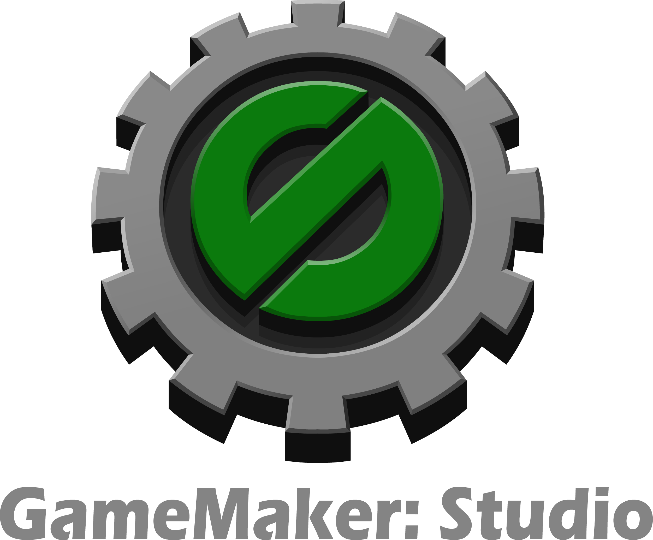
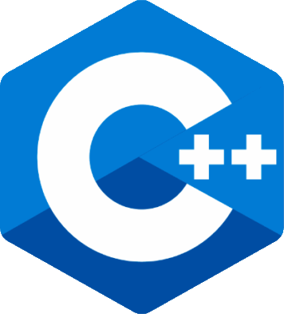
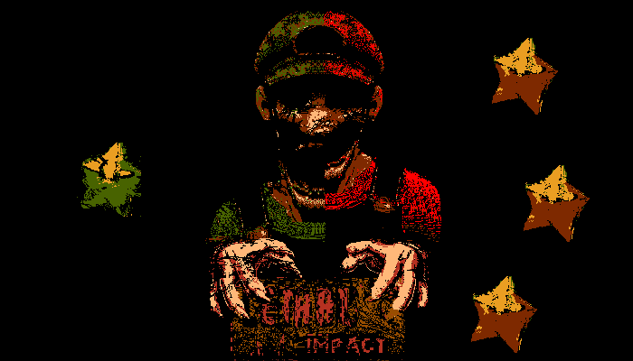
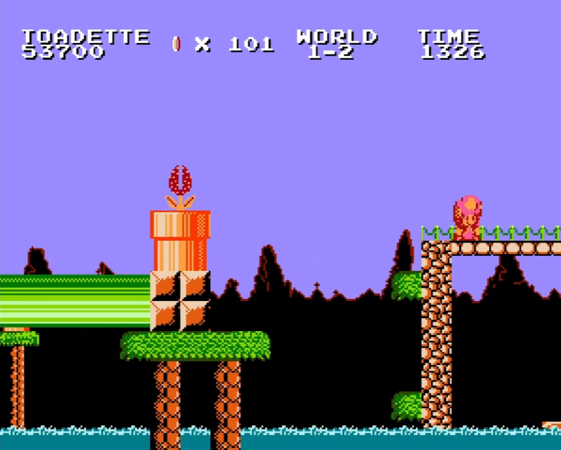
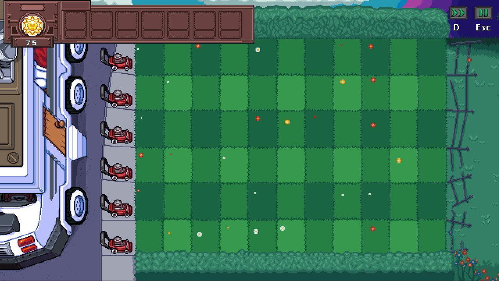
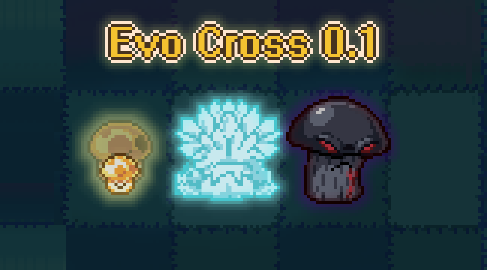

About Me
- Hi, I'm Zaptyd, I am a game developer with experience in programming and game frameworks. In all the years i've been developing games i learned how to use some programming languages and game engines (and i'm currently trying to learn more).
- Proficient in GML (GameMaker Language) for 2D game development (over 5 years of experience).
- Skilled in C++ with Allegro and building with MinGW (3 years of experience using Allegro, learning SDL2).
- Knowledge of C for programming fundamentals and optimization (nearly 1 year of experience).
- Currently learning C# with Unity for multiplatform game development.
Programming languages and engines i have used



I started with game development since I was 12, I really love it and always try to learn something new, after all this years i started, cancelled, and completed some projects
Super Mario Bros: Lethal Impact
This project is a 2D fangame based on the Super Mario Bros 1 from the NES, the plot is about a corrupted star that managed to take possesion of Luigi spreading an "infection" to the mushroom kingdom.

This game tried to mimic the gameplay and artstyle of SMB1, adding some features like walljumps, platforms that can be placed by the player and some other new mechanics and improved backgrounds with a color limit like the old NES games.
The current state of the project is: cancelled.
Plants vs Zombies: Evo Cross
This project is a 2D fangame based on Plants vs Zombies, the game plot round around helping both brothers of Crazy Dave while traveling the world... This game tried to add new things to the old gameplay of PvZ adding some features like Day-night cycle and a rework to the evolutions of PvZ1, with a new "Evolution System" where you can evolve your plants without choosing another seed, just using right click on a plant you can switch beetwen base plant and the evolved one, using an artstyle that can be defined as a huge update of the PvZ DS ones.

This game tried to appeal to a SNES+ look, trying to be a huge update of the (mostly terrible) PvZ DS pixel art style
The current state of the project is: In development.